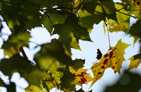

Next Photo
-
Vote
Guitar Field
The field of buffalo grass is reflected in the surface of my guitar. As you look at the picture be certain to look into the reflection. This was taken while I was messing with reflections inspired by my spoon photo. I am in the side of the guitar.
More...
ID: 9
Title: Guitar Field
Description: The field of buffalo grass is reflected in the surface of my guitar. As you look at the picture be certain to look into the reflection. This was taken while I was messing with reflections inspired by my spoon photo. I am in the side of the guitar.
Keywords: guitar reflection field superimposed grass
Hidden: n
Date added: Sat Mar 04 16:38:03 CST 2006
Date taken: Tue Apr 19 17:25:27 CDT 2005
Camera: EASTMAN KODAK COMPANY.KODAK CX6330 ZOOM DIGITAL CAMERA.
Resolution: 1524x2032
Mode:
Shutter speed: 65/10
Flash: 16
Exposure time: 1/90
Iso:
Metering: 5
Aperture: 3/1
Focal length: 56/10
Artist: NathanielGuy Mahieu
Copyright: 2006 NathanielGuy Mahieu
Views: 24967
